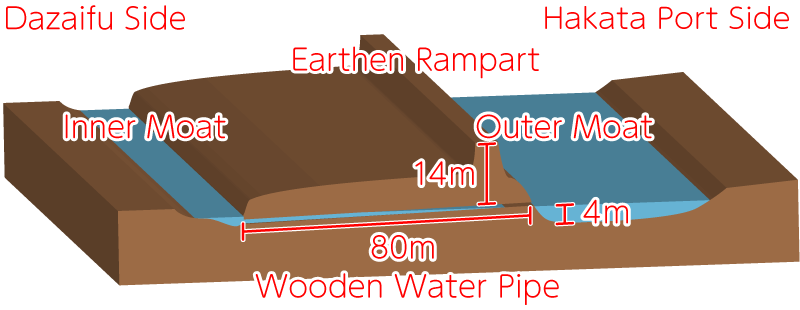

Front of the Card
Back of the Card
Japanese
English
Audio: NHK Creative Library
Read by LibriVox volunteer Larry Wilson.
Audio courtesy of LibriVox
天智天皇
秋の田の
かりほの庵の
苫をあらみ
我が衣手は
露にぬれつつ

わかころも
てはつゆに
ぬれつつ
あきの
- Poem 1
- 秋の田の
かりほの庵の
苫をあらみ
我が衣手は 露にぬれつつ
Author: Emperor Tenji (626–672)
Source: Gosen Wakashū, Autumn
- English Verse Translation
- Out in the fields this autumn day. They're busy reaping grain; I sought for shelter
'neath this roof, But fear I sought in vain,— My sleeve is wet with rain.
— William N. Porter, 1909
- Modern Translation
- By the rice fields, in a makeshift hut with a loosely woven roof, my sleeves are wet with the night dew.
- Commentary
- At harvest time, farmers built rough huts by the rice fields and kept watch all night to guard the crop from animals. It is hard to picture an emperor spending the night there with dew-soaked sleeves, so an anonymous Man'yōshū poem is thought to have been passed down as Emperor Tenji's, showing his care for ordinary people.
- About the Poet
- Emperor Tenji carried out the Taika Reforms, moving power from the great clans to the emperor and laying the base of a central government. This made him the founder of what became the Heian world, and people of the Heian period honored him deeply. He was a direct ancestor of Emperor Kanmu, who founded Heian-kyō.
- Poem Illustration
-

This image is based on an illustration from William N. Porter's A Hundred Verses from Old Japan, his 1909 English translation of the Hyakunin Isshu published in England, colorized and reworked using Adobe Firefly (generative AI).
- Emperor Tenji: A Short Timeline
-
- 626
- Born
- 645
- Brings down the powerful Soga clan in the Isshi Incident
- 663
- Japan suffers a heavy defeat at the Battle of Baekgang (Hakusukinoe)
- 667
- Moves the capital to Ōmi Ōtsu Palace
- 668
- Becomes emperor
- 669
- Gives Nakatomi no Kamatari the family name "Fujiwara"
- 670
- Creates the Kōgo Nenjaku, a family register
- 671
- Puts the Ōmi Code into effect
- 671
- Names his son, Prince Ōtomo, Grand Minister (Daijō-daijin)
- 672
- Dies; the Jinshin War breaks out
- Emperor Tenji's Family Tree
-
Emperor Tenji was the father of Empress Jitō (Poem 2).
After Emperor Tenji died, his son Emperor Kōbun (Prince Ōtomo) took the throne. But a fight over who should rule broke out — the Jinshin War. Emperor Tenji's younger brother, Prince Ōama (later Emperor Tenmu), who was also Empress Jitō's husband, defeated Prince Ōtomo.
- Appendix
-
-
Timeline of Emperor Tenji
(Click to open or close.)Emperor Tenji is born
Marries the daughter of Soga no Ishikawa-maro
This marriage is said to have been a political one, made to win Soga no Ishikawa-maro over to his side before the Isshi Incident.
The Isshi Incident
Together with Nakatomi no Kamatari and others, he killed Soga no Iruka. Iruka's father, Soga no Emishi, took his own life. Prince Karu became Emperor Kōtoku.
In the same year, Emperor Tenji's daughter Uno no Sarara (later Empress Jitō) was born.
Emperor Kōtoku set Japan's first era name, "Taika," and moved the capital from Asuka to Naniwa.
Prince Naka no Ōe (later Emperor Tenji) stayed on as crown prince.
Soga no Ishikawa-maro was given an important post as Minister of the Right.The capital moves to Naniwa Nagara-Toyosaki Palace
Emperor Kōtoku moved the capital from Asuka, the center of government until then, to Naniwa (in present-day Osaka).
The Reform Edict
The government announced the basic plan for a state run by written law, with power gathered in the hands of the emperor.
Under new rules, land and people belonged to the state, and rice fields were handed out to farmers by the government.The Soga no Ishikawa-maro affair
Soga no Ishikawa-maro's half-brother, Soga no Himuka, falsely accused him of plotting against Prince Naka no Ōe. Ishikawa-maro was driven to take his own life.
Prince Naka no Ōe returns to Asuka
Against Emperor Kōtoku's wishes, he went back to Asuka, taking with him his mother, the former Empress Kōgyoku (later Empress Saimei), Nakatomi no Kamatari, and other officials. One theory says the prince was against a policy that made powerful clans give their privately owned workers and land to the emperor. Real political power now moved from Emperor Kōtoku to Prince Naka no Ōe's side.
Emperor Kōtoku dies
Empress Saimei takes the throne
The former Empress Kōgyoku took the throne a second time, now as Empress Saimei.
Prince Arima is put to death
Egged on by Soga no Akae, Prince Arima was suspected of plotting a rebellion and was executed. With him gone, Prince Naka no Ōe was sure to be the next ruler.
Heavy defeat at the Battle of Baekgang (Hakusukinoe)
Japan was badly beaten by the combined forces of Tang China and the Korean kingdom of Silla.
Border guards and signal fires are placed on Tsushima, Iki, and Tsukushi
To prepare for an attack from Tang or Silla, Japan made its defenses stronger.
The capital moves to Ōmi Ōtsu (Ōtsu City, Shiga Prefecture)
He takes the throne as Emperor Tenji
The Ōmi Code is made
This was Japan's first organized set of laws. The criminal laws were not ready yet, so only the administrative laws came first. It is said that Emperor Tenji ordered the code and Fujiwara no Kamatari led the work. No copy survives today, but it is thought to be the code that laid the foundation for a state run by law.
Nakatomi no Kamatari dies
Just before Kamatari died, the emperor gave him the family name "Fujiwara" and Taishokkan, the highest court rank of the time.
The Kōgo Nenjaku family register is made
For the first time in Japan, a family register covering the whole country was created.
It was used to manage the handing out of rice fields and to call up soldiers.
Emperor Tenji builds a water clock and starts Japan's first time signal
Because this is said to be the day time signals began, June 10 is known today as Time Day (Toki no Kinenbi).
Emperor Tenji dies
The Jinshin War breaks out
After Emperor Tenji's death, his younger brother Prince Ōama (later Emperor Tenmu) and his son Prince Ōtomo (later Emperor Kōbun) fought over the throne. Prince Ōama's side won.
- An Ancient Emperor's Prayer for the Harvest
-

Source: ColBase (https://colbase.nich.go.jp/)
Ancient emperors are said to have offered a spade to the gods of farming on the first Day of the Rat of the New Year (Hatsune no Hi), praying for peace in the land and a good harvest.
This care for farming may also be seen in Emperor Tenji's poem in the Hyakunin Isshu.
A spade used in this ceremony is kept at the Shōsōin treasure house. The photo shows a copy of it.
- The Original Version of "Aki no ta no..."
- An older version of this poem is found in the Man'yōshū, Japan's oldest poetry collection, as a poem by an unknown author. It is very similar to Emperor Tenji's poem. It is thought that, over time, this Man'yōshū poem was reshaped into a poem by Emperor Tenji, showing his care for the lives and hardships of ordinary people.
In Japanese
秋田刈る 仮廬を作り 我が居れば
衣手寒く 露ぞ置きにける akitakaru kariihootsukuri wagaoreba
koromodesamuku tsuyuzookinikeru Man'yōshū, author unknownIn English
I built a rough hut for the autumn rice harvest,
and as I stay in it, my sleeves grow cold, and even the night dew has settled on them. - Izumi Shikibu's Poem Based on This One
- The next poem is by Izumi Shikibu. She borrowed from Emperor Tenji's poem, a technique called honkadori.
She says she cannot sleep in the hut where she is supposed to keep watch.In Japanese
秋の田の 庵に葺ける 苫をあらみ
もりくる露の いやは寝らるる akinotano iorinifukeru tomaoarami
morikurutsuyuno iyahaneraruru Shoku Gosen Wakashū, Izumi ShikibuIn English
The roof of my hut by the autumn rice field is loosely woven,
so how could I sleep with the dew dripping through? - Sakyō no Daibu Akisuke's Poem Based on This One
- The next poem is by Sakyō no Daibu Akisuke (Fujiwara no Akisuke), who also borrowed from Emperor Tenji's poem.
His poem in the Hyakunin Isshu also describes moonlight shining through gaps in the clouds,
and both poems show his gentle sense for finding beauty in a quiet scene.
In Japanese
秋の田に 庵さす賤の 苫をあらみ
月とともにや もり明すらん akinotani iosasushizuno tomaoarami
tsukitotomoniya moriakasuran Shin Kokin Wakashū, Fujiwara no AkisukeIn English
The farmer who builds a hut by the autumn rice field has a rough, loosely woven roof, so he will keep watch all night long, together with the moonlight shining in.
- Love Poems Between Emperor Tenji's Wife, Princess Nukata, and Her Former Husband, Prince Ōama
- The next poem is by Emperor Tenji's wife, Princess Nukata (Nukata no Ōkimi). She was first married to Prince Ōama (later Emperor Tenmu), and they even had a daughter together. But Prince Ōama's older brother, Emperor Tenji, fell for her, so she left Prince Ōama and became Emperor Tenji's wife. These two poems are an exchange between her and her former husband. In the poem, "waving one's sleeve" was a way for a man and a woman to show their love at the time. The exchange vividly shows the sad, hidden love of two people who kept thinking of each other in secret, caught in a love triangle.
- Princess Nukata's poem
-
In Japanese
あかねさす 紫野行き 標野行き
野守は見ずや 君が袖振る akanesasu murasakinoyuki shimenoyuki
nomorihamizuya kimigasodefuru Man'yōshū, Princess NukataIn English
You walk through the fields of murasaki (a plant used for purple dye), glowing in the red light, through the royal fields.
Won't the field guard see you waving your sleeve to me? - Prince Ōama's reply
-
In Japanese
紫草の にほへる妹を 憎くあらば
人妻ゆゑに われ恋ひめやも murasakino nihoheruimoo nikukuaraba
hitozumayueni warekohimeyamo Man'yōshū, Prince ŌamaIn English
If I hated you, as lovely as the murasaki flower,
would I still long for you, even though you are another man's wife? - The Isshi Incident and the Taika Reforms
-

Gukei Sumiyoshi, Public domain, via Wikimedia Commons In the Asuka period, after Prince Shōtoku died, the Soga clan held real power in the government. At the same time, Tang China was invading the Korean Peninsula, and tension was rising across East Asia. Worried by this, Prince Naka no Ōe (Emperor Tenji) felt that Japan needed a strong central government. In 645, together with Nakatomi no Kamatari, he overthrew the Soga clan in the Isshi Incident. This started the political changes known as the Taika Reforms. (Tap the red dots on the picture to see who is who.)
The year after the Isshi Incident, Prince Karu, Prince Naka no Ōe's uncle, became Emperor Kōtoku. Emperor Kōtoku issued the Reform Edict and pushed the idea that all land and people belonged to the state. Land and workers that powerful clans had privately owned became state property, which weakened the clans. However, Emperor Kōtoku and Prince Naka no Ōe disagreed over the reforms. The prince left the capital at Naniwa, where Emperor Kōtoku lived, and returned to Asuka, so the reforms stalled for a while.
- Japan's First Era Name, "Taika"
- With the Taika Reforms, a government centered on the emperor was set up, and Japan's first era name, "Taika," was chosen. Since the Meiji period (1868–1912), the era name changes only when a new emperor takes the throne, and one name is used for each emperor's whole reign. Before that, era names were changed often — not only when a new emperor took the throne, but also after lucky events or disasters.
- Prince Arima's Farewell Poem
- Prince Arima was led on by Soga no Akae into planning a rebellion. Prince Naka no Ōe (later Emperor Tenji) had him arrested and taken to what is now Wakayama Prefecture to be executed. On the way, knowing he would die, Prince Arima wrote a farewell poem. As the son of Emperor Kōtoku, Prince Arima was a strong candidate for the throne, so it is said that Prince Naka no Ōe had him killed for political reasons.
In Japanese
磐代の 浜松が枝を 引き結び
ま幸くあらば またかへり見む iwashirono hamamatsugaeo hikimusubi
masakikuaraba matakaherimimu Man'yōshū, Prince ArimaIn English
I will tie together the branches of the beach pines at Iwashiro (a place in present-day Wakayama Prefecture). If I am lucky enough to live, I will come back and see them again.
* In ancient times, people tied pine branches together to pray for a safe journey.
- A Poem by Fujiwara no Kamatari
- This poem is thought to have been written when Emperor Tenji gave Fujiwara no Kamatari (Nakatomi no Kamatari) a court lady named Yasumiko. Court ladies called uneme were chosen from beautiful young women, and many men admired them. But they were thought to serve the gods and the emperor, so normally no man other than the emperor could marry one. This shows how deeply the emperor trusted Kamatari, who had carried out the Isshi Incident with him and helped lay the foundations of the new state. In fact, just before he died, Kamatari was given Taishokkan, the highest court rank, and the family name "Fujiwara."
In Japanese
我れはもや 安見児得たり 皆人の
得難にすといふ 安見児得たり warehamoya yasumikoetari minahitono
ekatenisutoifu yasumikoetari Man'yōshū, Fujiwara no KamatariIn English
Look at me — I have won Yasumiko!
Yasumiko, whom everyone says no one can win — I have won her! - The Battle of Baekgang (Hakusukinoe)
-

In 663, a sea battle was fought at Baekgang (Hakusukinoe in Japanese), a river mouth on the Korean Peninsula. On one side were the joined forces of Tang China and Silla; on the other was the Japanese army, which was trying to help rebuild the kingdom of Baekje.
Baekje had been destroyed by Silla in 660. Kwisil Poksin, a former Baekje official, was fighting to bring the kingdom back. He called Prince Puyŏ P'ung, a Baekje prince living in Japan, home to be the new king, and asked Japan to send troops. Empress Saimei decided to send an army, but she died before it left. Her son, Prince Naka no Ōe (Emperor Tenji), took over command and sent troops to the Korean Peninsula.
However, according to the Nihon Shoki (Chronicles of Japan), the tide at Baekgang rose and fell so much that the Japanese ships could hardly even turn around. The Japanese army also could not work well with the Baekje forces, and it was driven back by the Tang and Silla forces.
After this defeat, Japan made its defenses stronger by building a huge earth wall called the Mizuki and mountain forts (yamajiro) across western Japan.
- Poems About Setting Out for the Battle of Baekgang
-
Emperor Tenji wrote the next poem while watching the ships leave for the Battle of Baekgang.
In Japanese
わたつ海の 豊旗雲に 入日さし
今夜の月夜 さやけかりこそ watatsumino toyohatagumoni iribisashi
koyoinotsukiyo sayakekarikoso Man'yōshū, Emperor TenjiIn English
The setting sun shines on the long, flag-like clouds that stretch over the sea.
May tonight's moon be clear and bright.The next poem is said to have been written by the court poet Princess Nukata, speaking for Empress Saimei, when the Japanese ships set out for the Battle of Baekgang.
In Japanese
熟田津に 船乗りせむと 月待てば
潮もかなひぬ 今は漕ぎ出でな nikitatsuni funanorisemuto tsukimateba
shihomokanahinu imahakogiidena Man'yōshū, Princess NukataIn English
We waited for the moon at Nikitatsu (a port in present-day Ehime Prefecture) to board our ships. Now the moon has risen, and the tide is right, too. Let us row out now!
About 50 years later, Yamabe no Akahito visited the same province of Iyo and, with Princess Nukata's poem in mind, wrote a poem thinking back on the courtiers who once sailed from Nikitatsu. See Yamabe no Akahito's page for more.
- Mountain Forts and the Mizuki Wall
-
After its heavy defeat at the Battle of Baekgang, Japan made its defenses stronger to prepare for an attack from Tang or Silla.
As part of this, ancient mountain forts (yamajiro) and the Mizuki earth wall were built. - Mountain Forts
-

Saigen Jiro, CC0, via Wikimedia Commons Around the same time as the Mizuki, Korean-style forts were built on mountaintops from northern Kyushu, along the Seto Inland Sea coast, to the Kinki region, using techniques brought from the Korean Peninsula. Working together with the Mizuki, they formed several layers of defense.
The photo shows Kinojō in Sōja City, Okayama Prefecture, which is thought to have been built in the late 7th century. All of the ancient mountain forts were later abandoned, but at Kinojō, parts of the walls and the west gate have been rebuilt, so you can get a sense of what it looked like.
- The Mizuki Wall
-

The Mizuki ("water fort") was built with techniques from the Korean Peninsula to protect Dazaifu, the government office in Kyushu, from an attack from the sea. The huge earth wall, still standing today, is about 1.2 km long, about 14 m high, and about 80 m wide, with room for many soldiers to wait. Digs have found a large moat on the outer side of the wall (the Hakata side). It is thought that the moat was once filled with water to keep enemies out.
- The Mizuki Site Today
-
The Mizuki site stretches across Dazaifu, Ōnojō, and Kasuga cities in Fukuoka Prefecture.
This video lets you see the wide site as if you were looking down from the sky. - Border Guards (Sakimori) and Signal Fires (Tobuhi)
-
After the heavy defeat at the Battle of Baekgang in 663, Japan had to prepare for an attack from powerful Tang and Silla. Emperor Tenji placed border guards on Tsushima and Iki (both now in Nagasaki Prefecture) and in Tsukushi (now Fukuoka Prefecture), and had signal fires set up.
Sakimori were soldiers sent to Kyushu, the front line against an attack from the mainland. Most were farmers drafted from eastern Japan, and they served for three years. Far from home and risking their lives to guard the border, they and their families left sad poems that were later collected in the Man'yōshū.
Tobuhi were signal-fire towers run by the border guards. They were placed on high mountains, and by sending up smoke in the day and lighting fires at night, the guards could quickly pass on news of an emergency, such as an enemy attack.
- Poems of the Border Guards
-
The next poem was written by the wife of a border guard. It shows the pain of a family whose husband was taken away to serve.
In Japanese
防人に 行くは誰が背と 問ふ人を
見るがともしさ 物思ひもせず sakimorini yukuhatagaseto tofuhitoo
mirugatomoshisa monoomohimosezu Man'yōshū, author unknownIn English
"Whose husband is going off to be a border guard next?" people gossip — and I envy them. Their husbands are not being taken, so they have nothing to worry about.
The next poem was written by a border guard who had lost his wife and had to leave his children at home when he left for duty.
In Japanese
韓衣 裾に取りつき 泣く子らを
置きてそ来ぬや 母なしにして karakoromo susonitoritsuki nakukorao
okitesokinuya hahanashinishite Man'yōshū, Osada no Toneri ŌshimaIn English
My children clung to the hem of my robe and cried, and I left them behind — children who have no mother.
- The Kōgo Nenjaku Family Register
-
The Kōgo Nenjaku was Japan's first nationwide family register, made by order of Emperor Tenji in 670.
After its heavy defeat at the Battle of Baekgang in 663, Japan needed to become stronger. Aiming for a strong central government, Emperor Tenji had this register made so the state could keep track of its people.
With this register, and under the rule that all land and people belonged to the state, the government could collect taxes and call up soldiers more steadily. It also helped control wanderers and bandits who caused trouble.
- Kakinomoto no Hitomaro's Poem Mourning
the Ruined Ōmi Ōtsu Palace -

(Photo taken August 12, 2025, at the Ōmi Ōtsu Palace Nishikori site) In 667, Emperor Tenji moved the capital from Asuka to Ōmi (present-day Ōtsu City, Shiga Prefecture). The situation in East Asia at that time played a big part in this decision.
After losing to Tang and Silla at the Battle of Baekgang in 663, Japan had to prepare for a foreign attack. It is thought that the capital was moved from Asuka, which was close to the sea and hard to defend, to Ōmi, a safer inland area. Ōmi was also an important hub for travel by land and water, which made it a good place for a capital.
But in 672, only five years after the move, Emperor Tenji died, and in the same year the Jinshin War broke out over who would take the throne. The capital at Ōmi fell into ruins.
Years later, the poet Kakinomoto no Hitomaro visited the place and wrote a long poem (chōka) about the capital's past glory and how it had become a ruin, showing that nothing lasts forever.
In Japanese
玉だすき 畝傍の山の 橿原の
ひじりの御代ゆ 生れましし
神のことごと 栂の木の
いやつぎつぎに 天の下
知らしめししを 天にみつ
大和を置きて あをによし 奈良山を越え
いかさまに 思ほしめせか
天離る 鄙にはあれど 石走る
近江の国の 楽浪の 大津の宮に
天の下 知らしめしけむ 天皇の
神の尊の 大宮は
ここと聞けども 大殿は
ここと言へども 春草の
繁く生ひたる 霞立ち
春日の霧れる ももしきの
大宮所 見れば悲しも tamadasuki unebinoyamano kashiharano
hijirinomiyoyu aremashishi
kaminokotogoto tsuganokino
iyatsugitsugini amenoshita
shirashimeshishio soranimitsu
yamatoookite aoniyoshi narayamaokoe
ikasamani omohoshimeseka
amazakaru hinanihaaredo ihabashiru
ouminokunino sazanamino ootsunomiyani
amenoshita shirashimeshikemu sumerokino
kaminomikotono oomiyaha
kokotokikedomo ohotonoha
kokotoihedomo harukusano
shigekuohitaru kasumitachi
haruhinokireru momoshikino
oomiyadokoro mirebakanashimo Man'yōshū, Kakinomoto no HitomaroIn English
Ever since the reign of Emperor Jinmu,
who took the throne at Kashihara near Mount Unebi,
emperor after emperor
has ruled the land from here.
Yet, leaving the land of Yamato and crossing the Nara hills —
what could he have been thinking? —
in a place far from the old capital,
in the land of Ōmi,
at the palace of Ōtsu,
the emperor ruled the land.
They say his palace was here,
they say his great hall was here,
but spring grass grows thick,
mist rises and blurs the spring sun,
and when I look at where the palace stood, I am filled with sorrow. - Ōmi Ōtsu Palace
- In 667, Emperor Tenji moved the capital from Asuka to Ōmi Ōtsu Palace. One reason was that, after the defeat at the Battle of Baekgang, he wanted the capital further inland, away from an attack that might come through the Seto Inland Sea.
- Ōmi Jingū Shrine
-


Ōtsu City, Shiga Prefecture. Ōmi Jingū is a shrine built on the site of Ōmi Ōtsu Palace, and it honors Emperor Tenji as its god.
Every January, the shrine hosts the national championships of competitive karuta, where the Meijin (master) and Queen titles are decided. See it on the map
- The Water Clock (Rōkoku)
-

(Photo taken August 12, 2025) The Nihon Shoki says that in the 5th month of 660, while he was still crown prince, Emperor Tenji made Japan's first water clock (rōkoku).
It also says that on the 25th day of the 4th month of 671, Emperor Tenji set up a water clock at Ōmi Ōtsu Palace and had bells and drums struck to tell people the time. In today's calendar, this day is June 10, so June 10 is now "Time Day" (Toki no Kinenbi). Ōmi Jingū holds a large Water Clock Festival (Rōkoku-sai) every June 10.
On the grounds of Ōmi Jingū there is a rebuilt copy of the water clock used by Emperor Tenji (photo on the left) (photo above).
This copy has four water tanks set up like steps, and water slowly flows down from one to the next. In the bottom tank, an arrow floats up as the water rises, and you can tell the time from the marks on the arrow.
- Ukiyo-e by Katsushika Hokusai
-

Katsushika Hokusai, CC0, via Wikimedia Commons This print is from One Hundred Poems Explained by the Nurse (Hyakunin Isshu Uba ga Etoki) by Katsushika Hokusai, an ukiyo-e artist of the Edo period. The idea of the series is a nurse explaining the Hyakunin Isshu poems with easy-to-understand pictures. The hut seen on the left of this harvest-time farm scene seems to be the rough hut from the poem.
- Utagawa Kuniyoshi's Hyakunin Isshu no Uchi
-

British Museum, Public domain, via Wikimedia Commons This ukiyo-e is by Utagawa Kuniyoshi, an artist of the Edo period.
It shows a scene that matches the poem in the Hyakunin Isshu. - Ukiyo-e by Suzuki Harunobu
-

public domain This work is by Suzuki Harunobu, an ukiyo-e artist of the Edo period.
The people in the front may be Emperor Tenji's empress and child.
In the back on the left, a farm landscape spreads out.
-